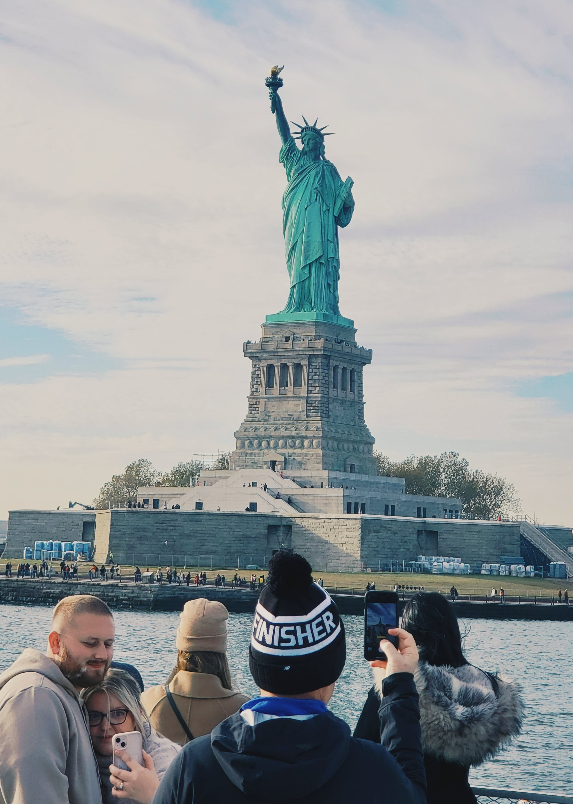

My Bucket List
- Visit London, United Kingdom
- Travel unknown distance without navigation
- Explore India.
- Run a Marathon
- Attend Martin Garrix Live concert
- Attend F1 Race
- Go to Amsterdam, Netherlands
- Visit Niagara Falls, NY, United States
- Visit Las Vegas, CA, United States
- See Grand Canyon, AZ, United States
- Visit Hawaii, HW, United States
- Plant a tree
- Visit Alaska, AL, United States
- Visit Statue of Liberty, NY, United States
- Attend a Tomorrowland Festival
- Visit Yellowstone National Park, United States
- Visit the Maldives
- Attend Masterclass on photography and editing
- Learn a new language and talk fluently with a native person
- Buy a car
- Go on Anonymous Wedding in India
- Travel to Canada
- Build a Farmhouse with Plantations and a Swimming Pool
- Meet Friends whom I had a fight with and apologize
- Visit Las Vegas, CA, United States
- Make a calendar with my own pics & achievements
- Visit Andaman & Nicobar Islands and Explore the Andaman coral reefs, India
- Visit Times Square, NY, United States
- Go off-roading
- Visit Goa
- Restore a bike to its old glory
- Buy a property on my own
- Visit Ramappa Temple, UNESCO World Heritage Site, India
- Learn to play guitar
- Climb to Tirumala Tirupati Temple, Andhra Pradesh, India
- Visit Taj Mahal, India
- Walk through the old Delhi lanes of Chandni Chowk, India.
- Visit the gateway of India.
- Own a second property of land on my own
- Visit Lakshadweep Islands, India.
- Buy a Drone
- Visit Yosemite National Park, United states
- Visit Sri Lanka
- Witness the sunrise at Kanyakumari, India.
- Get Married
- Explore Singareni Collieries, Telangana, India
- Visit Nallamala Forest
- Try bamboo chicken at Araku Valley, Andhra Pradesh, India
- Watch Live Cricket Match in Stadium
- Visit Mount Rushmore National Memorial, SD, United States
- Drive a Tractor
- Trek to Pandavula Gutta caves, Telangana, India
- Try and learn Skateboarding
- Try Chicken Shawarma
- Attend Bonalu Festival in Telangana, India.
- Visit the Charminar in Hyderabad, Telangana, India.
- Visit Golden Temple, Amritsar, India.
- Have candelight dinner
- Take a houseboat ride in Alleppey, Kerala, India
- Visit the IT capital of India, Bengaluru,India.
- Visit the Thousand Pillar Temple, Telangana, India
- Visit the Lepakshi temple in Andhra Pradesh, India.
- Drive a Tesla
- Try Octopus
- Stay in a 5-Star Hotel
- Drink Palm water
- Enjoy Hyderabadi Biryani at Paradise Hotel
- Develop a private party hub on one of the properties I own
- Own my own Bus
- Learn to bake bread
- Visit Chilkur Balaji Temple, Hyderabad, India
- Fly Business Class
- Visit Sabarimala Temple, Kerala, India
- Work for a day at a Sweet shop and learn making Jalebi

That's me, the guy in the Finisher Winter Hat, clicking pictures!

Yeah, that's me in the jacket. I witnessed Times Square.
Me and My friends looking the mining sites, FYI, Myself In the back in blue.

I cannot hold it but still I tried it with chopsticks.